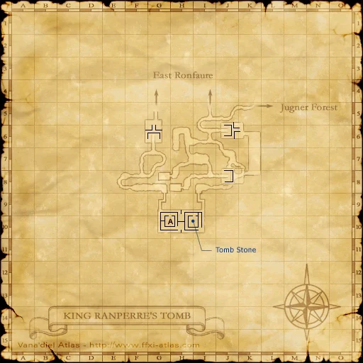
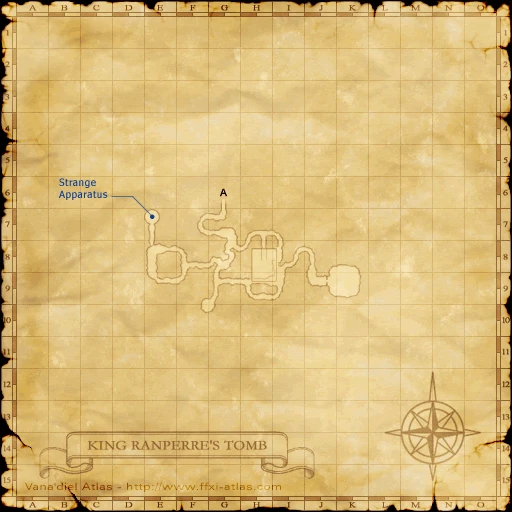
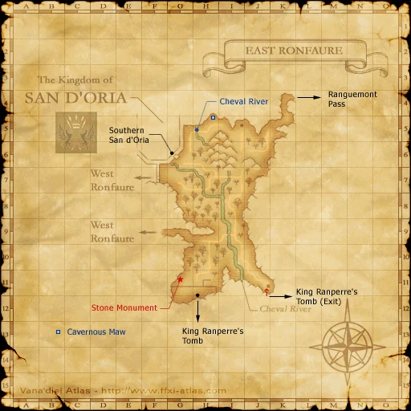

Before you begin
Be allied with San d'Oria, have Rank 1, and finish the preceding required story steps. Raise Rank Points if the mission is not offered.
Accept the mission before following its route. If the guard does not offer it, finish your current mission and any closing scenes, then raise Rank Points with crystals at a Conquest guard if required.
Items and key items
| Item — open for its source | Type | Where it comes from |
|---|---|---|
| Orcish Mail Scales | Inventory item | Dropped by Ding Bats in King Ranperre’s Tomb. Hunt the night spawns, 18:00–06:00 Vana’diel time. Examine the mission Tombstone before returning to trade the scales for your first Bat Hunt completion. |
| Bat Fang | Inventory item | Obtain a Bat Fang from the bat drops or sources below. It is the trade for a REPEAT of Bat Hunt; your first run uses Orcish Mail Scales. Accept the repeat and revisit the Tombstone before turning it in. |
Walkthrough
Reach the tomb
- Accept Bat Hunt from a mission guard. Travel south through East Ronfaure to the King Ranperre’s Tomb entrance at (H-11).
- On the first tomb map, reach the Tombstone around (H/I-10) and examine it for the mission scene.
First completion
- Hunt Ding Bats in the tomb at night, 18:00–06:00 Vana’diel time, until Orcish Mail Scales drop. Keep one set in inventory.
- Return to a mission guard and trade one Orcish Mail Scales.
Repeating the mission
- Accept Bat Hunt again and revisit the Tombstone. For a repeat completion, the required trade is one Bat Fang instead of Orcish Mail Scales.
Important notes
- Avoid the tomb’s ghost enemies at low level. The Tombstone event is a separate requirement from obtaining the drop.
Route maps


Completion and reward
Rank Points
Area maps
Open a zone below, then select a map to enlarge it. Match the named floors and grid coordinates in the steps; these are reference area maps, not a live position tracker.
King Ranperre's Tomb





East Ronfaure


References
Native mission script used by the Zenith baseline · HorizonXI route and map reference
Written for Zenith from the reviewed mission steps. Battlefield conditions follow the server’s entry message; Horizon-exclusive wardrobe rewards are not part of these rewards.
Additional level-75 reference
|
Walkthrough
- Travel to King Ranperre's Tomb, and kill Ding Bats at night until one drops some Orcish Mail Scales. Then travel deep into the tomb to find the king's grave. Click on the grave and a cutscene will ensue. Once you have activated the cutscene, and obtained the Orcish scales, return to the gate guard for your reward.
- This mission is repeatable. Starting with the second time on the mission, the gate guard will ask you to trade a Bat Fang to complete the mission. It is not necessary to rezone between repetitions.
- This mission is repeatable. On Eden you must do the full quest again, including activating the cutscene, however as above, the guard will only accept the Bat Fang as the mission hand in item.
Game Description
- Mission Orders
- Exterminate bats from King Ranperre's Tomb, and bring back proof of your deeds.
Adapted from Eden Wiki: Bat Hunt · Contributors and history · CC BY-SA 4.0. Revision 2854. Layout, links and optional background text adapted for Zenith.